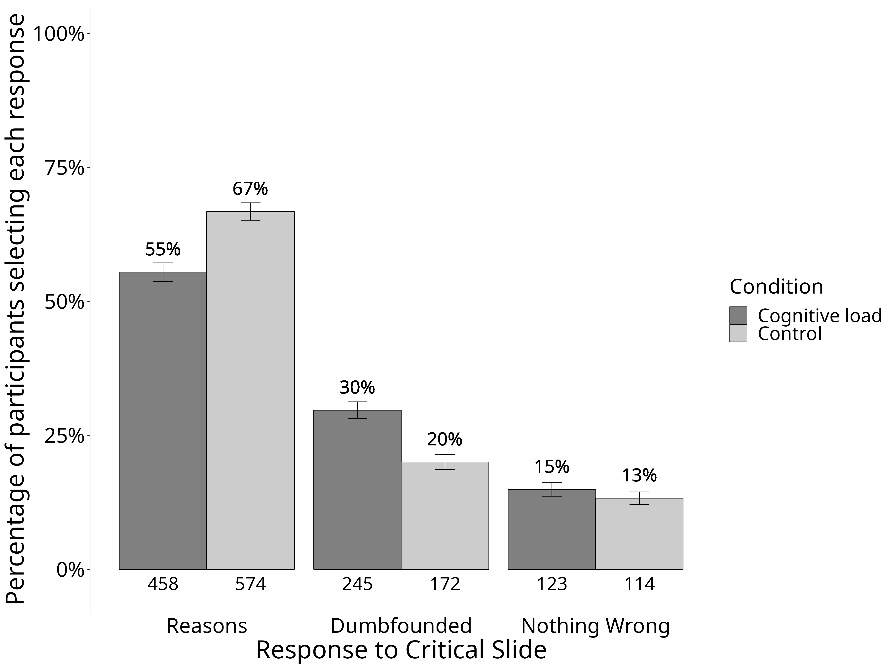
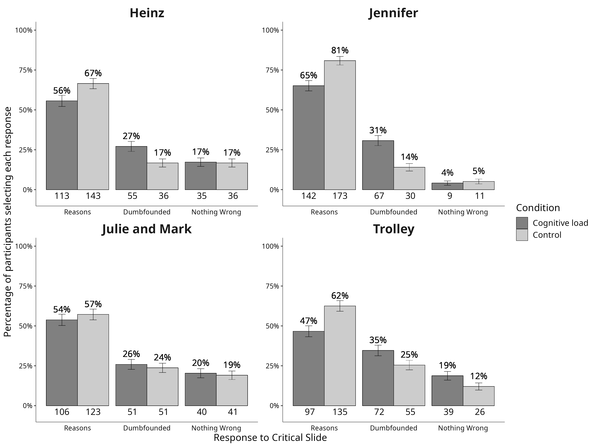

Cognitive Load Can Reduce Reason-Giving in a Moral Dumbfounding Task
Moral dumbfounding occurs when people defend a moral judgment, without reasons in support of this judgment. The phenomenon has been influential in moral psychology, however, despite its influence, it remains poorly understood. Based on the notion that cognitive load enhances biases and shortcomings in human judgment when elaboration is beneficial, we hypothesized that under cognitive load, people would be less likely to provide reasons for a judgment and more likely to be dumbfounded (or to change their judgment). In a pre-registered study (N = 1686) we tested this prediction. Our findings suggest that cognitive load reduces reason-giving, and increases dumbfounding (but does not lead to changes in judgments). Our results provide new insights into the phenomenon of moral dumbfounding while also advancing theory in moral psychology.
Moral dumbfounding occurs when people defend a moral judgment even though they cannot provide a reason in support of this judgment (Haidt et al., 2000; Haidt 2001; see also McHugh, et al., 2017, 2020). It has traditionally been seen as evidence for intuitionist and dual-process theories of moral judgment (e.g., Crockett 2013; Cushman, Young, and Greene 2010; Cushman 2013; Greene 2008; Haidt 2001; Prinz 2005; though this narrative has been contested, e.g., Guglielmo 2018; Royzman et al., 2015). Despite the influence of moral dumbfounding on the morality literature, the phenomenon is not well understood. Here we present a pre-registered test of one prediction of a dual-process explanation of moral dumbfounding.
Moral Dumbfounding: A Dual-Process Perspective
Drawing on dual-process theories of reasoning and moral judgment (e.g., Greene 2008; Cushman 2013; Brand 2016; Bago and De Neys 2019), we propose that moral dumbfounding occurs as a result of a conflict in dual-processes (Bonner and Newell 2010; De Neys 2012; De Neys and Glumicic 2008; Evans 2007; see also De Neys and Pennycook 2019). In classic dual-process reasoning accounts, conflicts occur when a habitual/intuitive response is different from a response that results from deliberation (Bonner and Newell 2010). Examples of such conflicts include base rate neglect problems (Bonner and Newell 2010; De Neys 2012; De Neys and Glumicic 2008; Evans 2007), the conjunction fallacy (De Neys 2012; Tversky and Kahneman 1983), and perhaps most relevant to the current discussion, a seemingly irrational but persistent unwillingness to contact various symbolically “contaminated” objects, despite assurances these items are sanitary (e.g., items believed to have had prior contact with: an AIDS victim, someone who had been in a car accident, or a murderer, see Rozin et al., 1994; Lerner and Goldberg 1999). We note that the original, unpublished dumbfounding manuscript included tasks closely resembling this final example (Haidt et al., 2000).
In line with the above, we propose that dumbfounding occurs when a habitual (moral judgment) response is in conflict with a deliberative response. In studies of moral dumbfounding, following an initial judgment, there are typically three responses available to participants: (1) providing a reason or justification for a judgment (henceforth reason-giving); (2) accepting counter-arguments and rating particular behaviors as “not wrong” (nothing-wrong); (3) maintaining a judgment without justification or reasons (dumbfounding). Both reason-giving and nothing-wrong can be accounted for by existing approaches to moral judgment (e.g., Cushman 2013), and while reason-giving is the most common response, dumbfounding is reliably observed (see McHugh et al. 2017, 2020) and remains an anomaly.
Drawing on existing theorizing (Cushman 2013; Haidt 2001; McHugh et al., 2022), we assume that making a moral judgment is an intuitive/habitual response involving relatively little deliberation, while reason-giving requires greater deliberation (a deliberative response). In this view, conflict occurs when deliberation fails to identify reasons for a judgment, and its resolution depends on the availability of cognitive resources for deliberation – further deliberation may identify relevant reasons. Alternatively, participants may resolve the conflict by accepting the arguments presented and changing their judgment (nothing-wrong). We propose that dumbfounding is observed when this conflict cannot be resolved. We hypothesize that nothing-wrong involves more deliberation than dumbfounding but less deliberation than reason-giving. The hypothesized relative amounts of deliberation for each response are outlined in Figure 1. We note that this explanation is not unique to dual-process approaches, but is also consistent with a unimodal (Kruglanski and Gigerenzer 2011) or categorization (McHugh et al. 2022) approaches, both of which predict that lower processing capacity reduces reason-giving, and increases dumbfounding.

This account of moral dumbfounding affords a clear testable hypothesis: under manipulations that affect the availability of resources for deliberation, responses in the moral dumbfounding paradigm should evidence variation in frequency of deliberative versus habitual responses. Cognitive load manipulations – such as completing an attention/memory task simultaneously with a primary task – have been shown to inhibit deliberative responding (De Neys and Glumicic 2008; Evans and Curtis-Holmes 2005; Evans and Stanovich 2013; Schmidt 2016). We have identified reason-giving as involving more deliberation than alternative responses in the dumbfounding paradigm. Thus, we predict that a cognitive load manipulation should inhibit reason-giving in a moral dumbfounding task, leading to an increase in habitual responding, such as dumbfounding or nothing-wrong.
The Current Research
Our primary prediction is that a cognitive load manipulation will inhibit people’s ability to provide reasons for their judgment, leading to greater habitual responses (either dumbfounding or nothing wrong or both). We present a pre-registered study to test this prediction of a conflict in dual-process explanation of moral dumbfounding. We experimentally manipulated cognitive load, and predicted that this cognitive load manipulation will inhibit people’s ability to provide reasons for their judgment, leading to greater habitual responses (either nothing wrong or dumbfounding or both).
Our cognitive load manipulation involved a secondary task requiring participants to pay attention to a stream of numbers on the screen while completing the moral judgment task. We conducted a series of pilot studies (see Supplement Studies S1 - S5) involving two different memory tasks. The effectiveness of these memory tasks in manipulating cognitive load was unclear, and it is possible that participants could cheat on these memory tasks (particularly for online samples). As such, we selected a cognitive load manipulation that required participants to pay attention to a secondary task (rather than a memory task) while engaged in the primary judgment task (in line with Greene et al. 2008).
The data for this study (and all pilot studies), as well as the analysis code for all studies, and full materials for this study including jsPsych script are publicly available at https://osf.io/fcd5r/?view_only=9fb6e506e53340c189b98453bb2b6eaf. This study was pre-registered and the pre-registration is available at https://aspredicted.org/XZP_UHW. All analyses were conducted in R (R Core Team 2021), see analysis code for full list of packages.
Method
Participants and design
This study was a between subjects design. The dependent variable was rates of reason-giving/dumbfounding (measured using the critical slide with 3 response options: 1: reason-giving; 2: nothing-wrong; 3: dumbfounded response - admission). The primary independent variable was cognitive load with two levels: present and absent. To manipulate cognitive load, a stream of numbers scrolled across the screen above the question text, and participants were required to pay attention to how many times they saw a given number. The scenario served as a secondary independent variable, we used four scenarios: Julie and Mark (Incest), Jennifer (Cannibal), Trolley, Heinz (see Supplementary Materials for full text of each).
A total sample of 1899 participants (984 female, 876 male, 17 non-binary, 1 other, 5 prefer not to say; Mage = 43.22, min = 18, max = 84, SD = 15.85) started the survey. Participants in this sample were recruited from Prolific (nUK = 963, nUS = 936).1
Participants who failed both manipulation checks (n = 7) or who had missing data for the measures of interest were removed, leaving a total sample of 1686 participants (867 female, 799 male, 14 non-binary, 1 other, 5 prefer not to say; Mage = 43.81, min = 18, max = 83, SD = 15.76), nUK = 842, nUS = 844.
Procedure and materials
Data were collected using an online questionnaire developed with jsPsych and distributed with cognition.run. Participants were presented with one of four moral scenarios (Julie and Mark, Jennifer, Trolley, Heinz, see supplementary materials for full wording), previously used in studies of moral dumbfounding (McHugh et al., 2017). Participants rated on a 7-point Likert scale how right or wrong the behavior of the character in the scenario was (where, 1 = Morally wrong; 4 = neutral; 7 = Morally right), and were given an opportunity to provide reasons for their judgment. Following this, participants were presented with a series of counter-arguments, which refute commonly used justifications for rating the behavior as “wrong” (see supplementary materials for full text of scenarios and all counter-arguments).
Dumbfounding was measured using the critical slide (developed by McHugh et al., 2017). This contained a statement defending the behavior and a question as to how the behavior could be wrong (e.g., “Julie and Mark’s behavior did not harm anyone, how can there be anything wrong with what they did?”). There were three possible answer options: (a) “It’s wrong, and I can provide a valid reason” (reasons); (b) “It’s wrong, but I can’t think of a reason” (an admission of not having reasons); (c) “There is nothing wrong”. The order of these response options was randomized. Participants who selected (a) were prompted to type a reason. The selecting of an option (b), the admission of not having reasons, was taken to be a dumbfounded response.2 We note that this measure provides a conservative measure of dumbfounded responding [see McHugh et al. (2017) for discussion). A key advantage of this measure of dumbfounding is its suitability for use with cognitive load manipulations. The task requirements for each of the three response options are qualitatively the same (selecting a response), eliminating the potential confounding influence of different types of task requirements. Importantly, participants who selected (a) were only prompted to provide a reason after their response to the critical slide had been submitted and recorded, and the survey had proceeded to the next page. Participants did not know they would be required to provide a reason prior to the presentation of this prompt.
We included a video stream of numbers scrolling above the question text for our cognitive load manipulation, drawing on Greene et al. (2008). The video was wide enough to display 3 numbers at a time, and the numbers scrolled past at a speed of 2 numbers per second. Participants were asked to attend to and report (on a subsequent page) how many times a particular number appeared in the stream, while answering the target question. Following an initial training task, the video was presented while participants made their initial judgments, while they responded to the critical slide, and while they were providing their revised judgments.
Two attention check tasks were included for all participants, these included a brief paragraph of text where instructions for the correct response were embedded within the text. The wording of the text was misleading such that if participants skimmed or only read some of the text they would likely provide an incorrect response.
Participants clicked on the survey link and were randomly assigned to either the experimental condition or the control condition, within which they were randomly presented with one of the four scenarios. The study was complete within 5 minutes.
Results
One thousand three hundred sixty-five participants (80.96%) rated the behavior described as wrong initially, and one thousand three hundred forty three participants (79.66%) rated the behavior as wrong at the end of the task. Initial ratings (M = 2.26, SD = 1.63) were significantly more severe than revised ratings (M = 2.34, SD = 1.66), t(1685) = -2.6888442, p = .007; d = 0.07. Inspection of the binned judgments revealed that two hundred (11.86%) participants changed the valence of their judgments, breakdown of the changes in judgments is in Table 16 (full sample) and Table 17 (by scenario) in the supplementary materials.
A 2 \(\times\) 2 factorial ANOVA revealed significant differences in initial judgments depending on both condition F(1, ,, , 1678) = 26.65, p < .001, partial \(\eta\)2 = .016, and scenario F(3, ,, , 1678) = 69.3, p < .001, partial \(\eta\)2 = .110. Participants under cognitive load were significantly (p < .001) less harsh in their judgments (M = 2.46, SD = 1.75) than those in the control condition (M = 2.07, SD = 1.49). Participants rated Jennifer as the most wrong (M = 1.53, SD = 1.13), followed by Julie and Mark (M = 2.05, SD = 1.65, p < .001), then Heinz (M = 2.49, SD = 1.65, p < .001), with Trolley receiving the least severe judgment (M = 2.98, SD = 1.69, p < .001). There was no significant condition \(\times\) scenario interaction F(3, ,, , 1678) = 0.46, p = .708, partial \(\eta\)2 < .001.
A 2 \(\times\) 2 factorial ANOVA revealed significant differences in revised judgments depending on both condition F(1, ,, , 1678) = 12.82, p < .001, partial \(\eta\)2 = .008, and scenario F(3, ,, , 1678) = 80.69, p < .001, partial \(\eta\)2 = .126. Participants under cognitive load were significantly (p < .001) less harsh in their judgments (M = 2.47, SD = 1.71) than those in the control condition (M = 2.2, SD = 1.59). Participants rated Jennifer as the most wrong (M = 1.54, SD = 1.12), followed by Julie and Mark (M = 2.15, SD = 1.73, p < .001), then Heinz (M = 2.52, SD = 1.58, p = .003), with Trolley receiving the least severe judgment (M = 3.14, SD = 1.72, p < .001). There was no significant condition \(\times\) scenario interaction F(3, ,, , 1678) = 1.34, p = .260, partial \(\eta\)2 = .002.
Dumbfounding was recorded using the critical slides, participants who selected the admission of not having reasons on the critical slide were identified as dumbfounded. Four hundred and seventeen participants (24.73%) selected “It’s wrong but I can’t think of a reason”. One thousand and thirty-two participants (61.21%) selected “It’s wrong and I can provide a valid reason”; and two hundred and thirty-seven participants (14.06%) selected “There is nothing wrong”.
A chi-squared test for independence revealed a significant association between experimental condition and response to the critical slide, \(\chi\)2(2, N = 1686) = 25.485, p < .001, V = 0.1229449, the observed power was 0.997. As predicted, under cognitive load fewer participants (458; 55.4479419%) provided reasons than in the control condition (574; 66.744186%), and more participants (245; 29.6610169%) selected “It’s wrong but I can’t think of a reason.” than in the control group (172; 20%). The responses to the critical slide for the experimental group (N = 826) and the control group (N = 860) are displayed in Figure @ref(fig:S6ch5S6fig1criticalconditionb). The observed counts, expected counts and standardised residuals are displayed in Table @ref(tab:S6tab1dumb).
The setup of the jsPsych script ensured we collected response time data for the critical slide as well as the corresponding responses for the cognitive load task (e.g., “how many times did you see the number 3?”). Combining these items allowed us to develop a measure of participants’ performance on the secondary task for the critical slide (we also have this information for the revised judgment, however, a typo in the jsPsych script meant we cannot develop this measure for the initial judgment; we did not record reaction time for the practice task).
For the critical slide, 383 participants (46.37%) responded correctly to the secondary task (while for the revised judgment only 12 participants [1.45%] responded correctly to the secondary task). There was no significant difference in responses to the critical slide between participants who provided an accurate response and those who provided an inaccurate response to the secondary task, \(\chi\)2(2, N = 1686) = 4.248, p = .120, V = 0.0717154, the observed power was 0.438, see Table 24 in the supplementary materials.
We additionally conducted an equivalence test to investigate if rates of reason giving varied depending on performance in the cognitive load task. We recoded responses to the critical slide as 1 = reason given, 0 = reason not given. Our sub sample in the experimental group contained a total of n = 826 participants and with this sample we can detect equivalence at the level of d = .1017 with 80% power. The equivalence test was non-significant, t(804) = 0.14, p = .443 given equivalence bounds of -0.051 and 0.051 (on a raw scale) and an alpha of 0.05. The null hypothesis test was non-significant, t(804) = -1.31, p = .189, given an alpha of 0.05. Thus while we did not find a significant effect for task performance, we cannot conclude that task performance had no effect on reason-giving/response to the critical slide.
We conducted a follow-up regression analysis to attempt to disentangle the effect of the cognitive load condition vs performance on the cognitive load task, on reason-giving. As expected the overall model significantly predicted reason-giving \(R^2 = .01\), \(F(2, 1,683) = 12.38\), \(p < .001\). Participants in the control condition were significantly more likely to give reasons than participants who provided the correct response \(b = -0.14\), 95% CI \([-0.20, -0.08]\), \(t(1683) = -4.62\), \(p < .001\), and participants who provided an incorrect response \(b = -0.09\), 95% CI \([-0.15, -0.04]\), \(t(1683) = -3.24\), \(p = .001\). There was no significant relationship between rates of reason-giving and whether participants provided a correct or an incorrect response \(b = 0.05\), 95% CI \([-0.02, 0.11]\), \(t(1683) = 1.35\), \(p = .177\)

| Cognitive Load | Control | ||
|---|---|---|---|
| Observed count | Reasons | 458 | 574 |
| Dumbfounded | 245 | 172 | |
| Nothing Wrong | 123 | 114 | |
| Expected count | Reasons | 505.59 | 526.41 |
| Dumbfounded | 204.3 | 212.7 | |
| Nothing Wrong | 116.11 | 120.89 | |
| Standardised residuals | Reasons | -4.76** | 4.76** |
| Dumbfounded | 4.6** | -4.6** | |
| Nothing Wrong | 0.97 | -0.97 |
Note. * = sig. at < .05; ** = sig. at < .001
This pattern was observed for all scenarios individually with the exception of Julie and Mark, which showed no association between experimental condition and cognitive load, \(\chi\)2(2, N = 412) = 0.489, p = .783, V = 0.0344471, power = 0.089. The association was significant for Jennifer \(\chi\)2(2, N = 432) = 17.329, p < .001, V = 0.2002813, power = 0.969, Trolley \(\chi\)2(2, N = 424) = 10.953, p = .004, V = 0.1607228, power = 0.851, and Heinz, \(\chi\)2(2, N = 418) = 7.158, p = .028, V = 0.1308616, power = 0.666, see Figure @ref(fig:S6ch5S6fig2criticalconditionb). Supplementary Tables 20-23 show the direction of the effect for each scenario. Under cognitive load, fewer participants provided reasons and more participants provided a dumbfounded response for Jennifer, Trolley, and Heinz
Given the null result for Julie and Mark, we conducted an exploratory follow-up (not-preregistered) equivalence test, to investigate if our results provided evidence for the absence of an effect for cognitive load. Our key dependent variable was reason-giving, operationalized by participants response to the critical slide. As such, our equivalence test focused specifically on reason-giving, we recoded responses to the critical slide as 1 = reason given, 0 = reason not given. Our sub sample who responded to the Julie and Mark scenario contained a total of n = 412 participants. With this sample we can detect equivalence at the level of d = .204 with 80% power.
The equivalence test was non-significant, t(406) = 1.38, p = .085 given equivalence bounds of -0.102 and 0.102 (on a raw scale) and an alpha of 0.05. The null hypothesis test was non-significant, t(406) = -0.69, p = .489, given an alpha of 0.05. We did not find equivalence at the level of d = .204, neither did we find a significant effect.

A chi-squared test for independence revealed a significant association between scenario and response to the critical slide, \(\chi\)2(6, N = 1686) = 61.341, p < .001, V = 0.1907417, the observed power was 1. Participants were significantly more likely to select “There is nothing wrong” for Julie and Mark (p = .002), more likely to provide reasons (p = .002) and less likely to select “There is nothing wrong” (p < .001) for Jennifer, and more likely to be dumbfounded by Trolley (p = .031).
A multinomial logistic regression was conducted to test the effects of cognitive load and scenario on dumbfounded responding. Overall the model was significant, \(\chi\)2(8, N = 1686) = 95.9, p < .001, and explained between 6.07% (Cox and Snell R square) and 7.22% (Nadelkerke R squared) of the variance in responses to the critical slide, the observed power was 1. Participants in the control condition were significantly less likely to provide a dumbfounded response than to provide reasons, Wald = 25.04, p < .001, OR = 0.5534159, 95% CI [0.4389422, 0.6977437], in addition, participants in the control condition were also signifcantly less likely to select “There is nothing wrong”, than to provide reasons, Wald = 5.23, p = .022, OR = 0.7149973, 95% CI [0.5362742, 0.953283]. For Jennifer, participants were significantly less likely to select “There is nothing wrong” than to provide a reason, Wald = 30.87, p < .001, OR = 0.226737, 95% CI [0.1343332, 0.3827027]; while for Trolley participants were significantly more likely to present as dumbfounded than to provide a reason, Wald = 6.89, p = .009, OR = 1.5452346, 95% CI [1.1164474, 2.1387035].
Discussion
The present research aimed to add to the literature on moral judgments by offering new insights into factors that prompt moral dumbfounding. We hypothesized that under cognitive load, participants would be less likely to provide reasons and more likely to present as dumbfounded (or to select nothing wrong). When participants engaged in a secondary task while completing a dumbfounding task reason-giving was inhibited for three out of four scenarios tested. Overall we find evidence that in situations where the resources available for deliberation are limited (as when cognitive load is high), reason-giving is reduced, and moral dumbfounding is more likely. This key finding is consistent with previous work demonstrating that cognitive load inhibits deliberative responding (De Neys 2006; Evans and Curtis-Holmes 2005).
Implications, Limitations, and Future Directions
These studies offer new understandings of the phenomenon of moral dumbfounding. While our studies illustrate the complexity of attempting to understand moral judgments, we do demonstrate some reliable patterns that offer support to our core theoretically-informed hypotheses. Furthermore, these studies showcase a methodology for measuring dumbfounding under different empirical conditions, offering a path for future researchers to explore the role of other contextual and individual difference variables in influencing moral dumbfounding.
From a theoretical perspective, our findings are consistent with a dual-process explanation of moral dumbfounding, whereby dumbfounding occurs when an intuitive/habitual response is in conflict with a deliberative response (Evans 2007; again we note that the assumption of dual-processes is not necessarily required, and that this prediction is also consistent with the unimodel, Kruglanski and Gigerenzer 2011; or categorization approaches McHugh et al. 2022). In line with existing theorizing on moral judgments (Cushman 2013; McHugh et al. 2022; Railton 2017), we propose that an individual may make an intuitive judgment and that subsequent attempts to identify reasons for this judgment occur through deliberation. If deliberation is unsuccessful and the individual does not revise their judgment, dumbfounding is observed. In support of this explanation, our studies demonstrated that by reducing the cognitive resources available for deliberation, reason-giving was reduced and dumbfounding increased.
Our results do display some unexplained variability, with the classic dumbfounding scenario (Julie and Mark) showing no significant change in responding with increased cognitive load (we note that the pilot studies used only this scenario and also showed mixed results). An exploratory follow-up test for equivalence did not provide evidence for the absence of an effect; thus, our results regarding Julie and Mark are inconclusive.
One potential explanation for this may point to an overall tendency for participants to be less likely to provide reasons for their judgment of Julie and Mark than for the other scenarios. This would be in line with its apparent standing as the classic dumbfounding scenario (Haidt 2001; Royzman, Kim, and Leeman 2015). Examination of Figure 3 seems to provide some support for this interpretation. In the control condition, the rate of providing reasons was lowest for Julie and Mark, and this remained descriptively lower than rates of reason-giving for both Heinz and Jennifer in the cognitive load conditions (i.e., rates of reason-giving for both Heinz and Jennifer were higher under cognitive load than rates of reason-giving in the control condition for Julie and Mark). It is possible that any effect of cognitive load on reason-giving was confounded by this lower base rate of reason-giving. We note however that this interpretation is not necessarily supported when the results for Julie and Mark are compared with the results for Trolley. That is, rates of reason-giving for Trolley under cognitive load were lower than rates of reason-giving for Julie and Mark in either condition. Future research should attempt to better understand these findings.
It is also possible that these inconclusive results reflect a lack of statistical power. Recall that a sample of N = 1966 was required to detect a small effect size (V = .07) with 80% power. It is possible that cognitive load does reduce reason-giving, even in the Julie and Mark scenario, but that our sub-sample of a sample of N = 412 did not have sufficient power to detect this effect. We cautiously present two reasons why this interpretation may be plausible. First, our equivalence test was sufficiently powered to detect equivalence at the level of d = .204, however, this failed to show equivalence. Second, all five pilot studies used the Julie and Mark dilemma, and while the results of these appear to be similarly inconclusive, the direction in the pattern of results remains consistent across all studies – that is the opposing pattern of results has not been shown in any study. None of the studies conducted showed an increase in reason-giving under cognitive load (even a non-significant increase).
We note that while we did not find any significant differences in responding to the critical slide depending on performance for the cognitive load task, neither did we find evidence of equivalence. It is plausible that the quality of engagement with the secondary task will impact the influence of this secondary task on a moral judgment task, and this provides a further avenue for future research.
It may be possible that some of the observed variability in our results can be attributed to methodological limitations. Classic studies of dual-process conflict are characterized by binary response options [an intuitive response contrasted with a deliberative response; Evans (2007)], whereas our studies included three response options that varied in their relative amount of deliberation. As such the dumbfounding paradigm is more complex than classic binary response paradigms, and cognitive load manipulations may not be well suited for this additional complexity. It is also possible that this variability reflects a lack of statistical power to detect small effects for the specific scenario.
It is also possible that these results provide evidence that the conflict in dual-process explanation tested here is only part of the story, illustrating that moral dumbfounding displays high variability and context dependency (as with moral judgment more generally, see McHugh et al. 2022). For example, a further complication is that responses in the dumbfounding paradigm may involve competing intuitions. For example, participants may have intuitions relating to the nature of moral knowledge, such as moral judgments should be justifiable by reasons, that may become salient during the course of the study. This means that, in addition to experiencing a conflict between habitual and deliberative responding, participants may also experience competing intuitions. The relative salience of these competing intuitions may depend on a range of factors, including features of the scenario (e.g., severity/seriousness of the transgression, the kind of transgression), features of the characters in the scenario, personal familiarity with discourse around scenario content, and other factors such as current goals. Future research should unpack the influences of these competing intuitions.
One interesting finding that emerged that was not hypothesized was the apparent influence of cognitive load on participants’ judgements. Under cognitive load, participants were significantly less harsh in their judgments (note that this appears to reflect judgments of lower extremity rather than a change in the valence of participants’ judgments). This was true for both initial judgments and revised judgments, suggesting that this is more than just an increased receptiveness to the counter-arguments under cognitive load (initial judgments were made before any counterarguments were presented). Future research should follow up on this finding, and investigate the influence of cognitive load on moral judgments more generally, e.g., does it only influence specific kinds of judgments (such as utilitarian judgments specifically, see Greene et al., 2008).
Our findings have relevance for society more broadly. Moral considerations inform a range of behaviors and decisions, both at the individual level and at the societal level (Sinnott-Armstrong et al., 2010). It is likely that moral dumbfounding may be a contributing factor to moral disagreement on contentious issues. Our studies provide evidence that dumbfounding may be more prevalent in situations that constrain people’s ability to engage in deliberation. In practice, this suggests that when discussing contentious moral issues, disagreement through dumbfounding may be reduced by ensuring conditions suitable for deliberation (e.g., avoiding emotionally charged, high-pressure environments). Future research should build on this to test experimental manipulations that may help to reduce dumbfounding. Such a program of research may lead to the development of practical interventions that can reduce instances of dumbfounding in real-world situations. Examples of relevant experimental manipulations may draw on approaches such as construal level theory to encourage more abstract reasoning, e.g., through increased psychological/temporal distancing (e.g., Liberman et al., 2002). We note that attempts to test this will be similarly constrained by the methodological considerations identified above (three response options, competing intuitions).
While the studies presented here were in line with our theoretical predictions, we note that our samples were either student or online participants from Westernized countries, limiting the generalizability of our findings. While emerging research suggests that dumbfounding is observed in certain non-WEIRD populations (McHugh et al. 2023), future research should test if the explanation tested here generalizes beyond Western contexts.
Conclusion
Moral dumbfounding occurs when people stubbornly maintain a moral judgment, even without reasons to support their judgments. To date, there are few studies that consider the causes of moral dumbfounding. Here, we test the idea that moral dumbfounding is more likely to occur when an individual is experiencing greater demands on their cognitive system, leaving less cognitive resources available for reasoning in complex moral dilemmas. The findings from the present research show that moral dumbfounding is more likely to occur under cognitive load, at least in some contexts. While these findings add new knowledge to the literature on moral dumbfounding, they also highlight the complexities of moral judgments. Further research is needed to better understand the factors that lead to dumbfounding, and, ultimately, how it might be reduced.
References
References
Footnotes
A priori power analysis indicated that, for the primary research question (the influence of cognitive load on dumbfounded responding), in order to detect a large effect size (V = .35) with 80% power, a sample of N = 79 participants was required; in order to detect a medium effect size (V = .21) with 80% power a sample of N = 218 participants was required; in order to detect a small effect size (V = .07) with 80% power a sample of N = 1966 was required.↩︎
This measure avoids the potential confounding influence of qualitative differences between different response types; that is, participants indicate whether they can provide reasons for their judgments or not, and this is our measure (not whether or not they actually provide reasons, as this different type of response would not be comparable to a dumbfounded response).↩︎